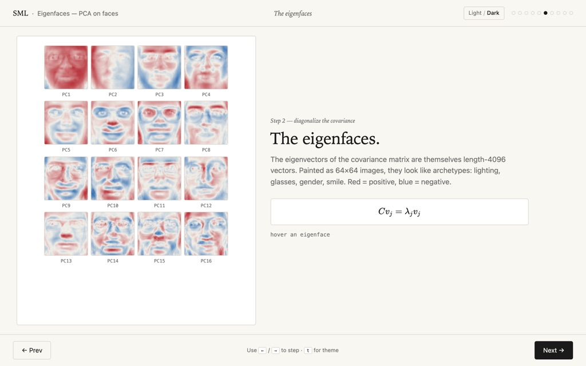
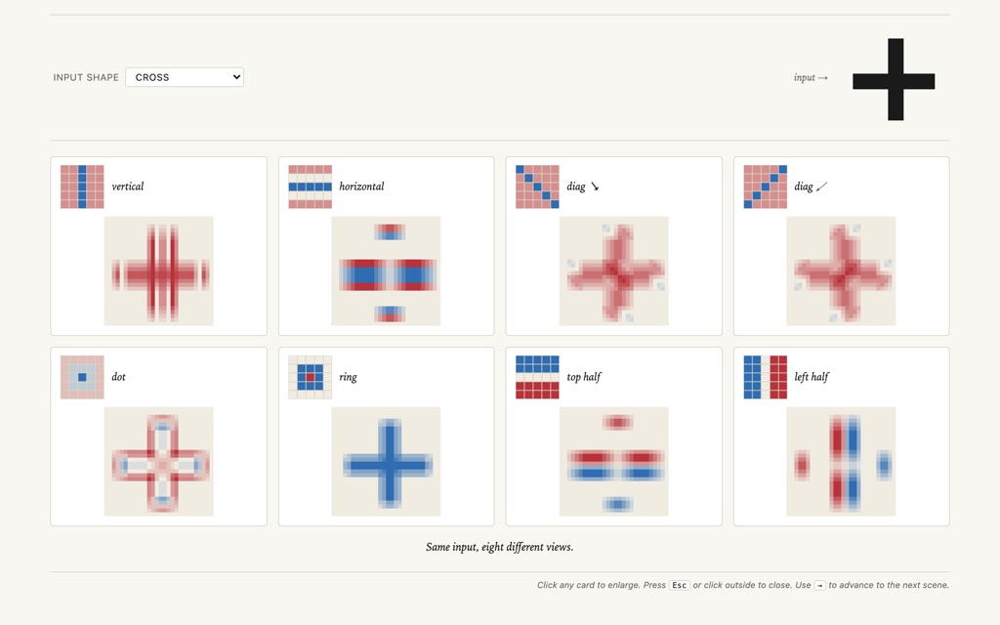
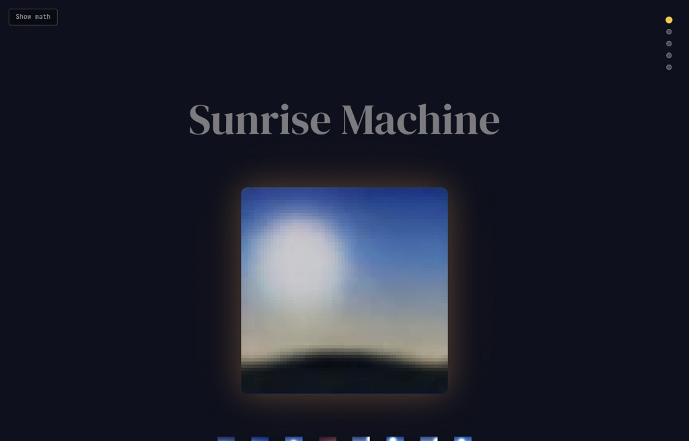
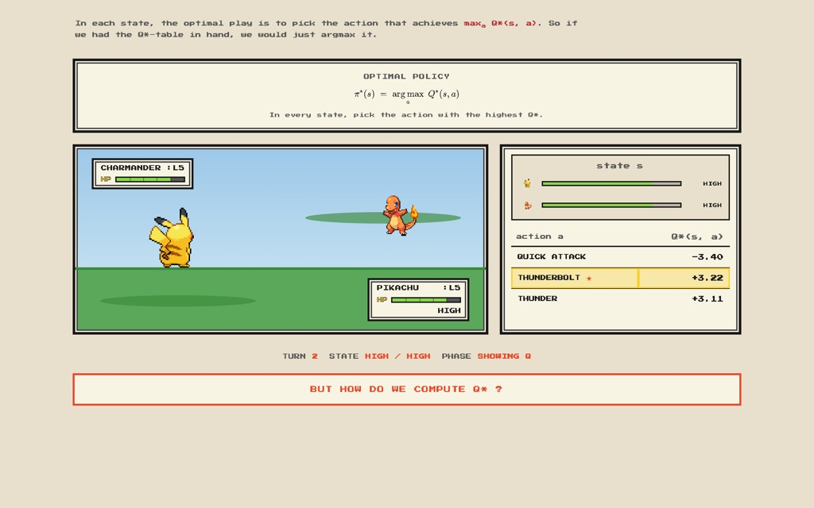

Principal component analysis
The Senate, projected
A data story that watches 175 years of U.S. Senate roll-call votes collapse onto two principal components.
Teaching
Teaching is the core of what I do. Since 2020 I have taught machine learning and computer science across ETH Zürich, from master's students to managers in continuing education to first-year students in the engineering and science departments.
Two recorded lectures from Advanced Machine Learning (ETH Zürich, 2025), with the accompanying notes.
Graduate courses in machine learning for master's students in computer science, data science, statistics, and related programs.
Co-taught with Professor Emeritus Joachim Buhmann. The two featured lectures above are from this course.
Theoretical foundations of machine learning: PAC learning, VC dimension, Rademacher complexity, and algorithmic stability.
Courses for working professionals in ETH's CAS and MAS programs in artificial intelligence and digital technology.
CAS in AI and Software Development; MAS in AI and Digital Technology.
CAS in AI, Data and Machine Learning; MAS in AI and Digital Technology.
CAS in AI and Software Development; MAS in AI and Digital Technology.
MAS in AI and Digital Technology.
MAS in AI and Digital Technology.
First-year computer science and data-analysis courses for students across ETH's engineering and science departments.
Mechanical Engineering (D-MAVT), first-year compulsory course.
Mechanical Engineering (D-MAVT), first-year compulsory course.
Mechanical Engineering (D-MAVT), compulsory course in Examination Block 2.
Physics (D-PHYS), first-year compulsory course.
Civil, Geospatial and Environmental Engineering (D-BAUG).
Civil, Geospatial and Environmental Engineering (D-BAUG).
Mathematics and Physics Bachelor (first-year), and Interdisciplinary Sciences.
Browser-only, click-through visualizations I build to make machine-learning ideas tangible. Open any one and step through it.
Principal component analysis
A data story that watches 175 years of U.S. Senate roll-call votes collapse onto two principal components.

Principal component analysis
Twenty principal directions that almost reconstruct any face, and that look like faces themselves.

Deep learning
A hub of click-step explainers: stacking neurons into curves, gradient descent, convolutional networks, and U-Net.

Generative models
A variational autoencoder that learns to paint sunrises, and lets you wander its latent space.

Reinforcement learning
Classic reinforcement learning, told as a retro Pokémon battle.
Implement a transformer-based translator and a small stable-diffusion model from scratch, with only basic PyTorch required. We build up from attention to the transformer architecture, then introduce diffusion processes, UNets, and cross-attention, ending with a complete stable-diffusion model trainable in minutes on a laptop, using a tiny "Shape English" dataset so every component stays inspectable. This bottom-up approach was evaluated in a classroom randomized controlled trial at ETH Zürich; the resulting paper received the CER Best Paper (Global) award at SIGCSE 2026.
The basics of quantum computation using only linear algebra over the real numbers. No prior quantum mechanics or complex analysis required.
How can you tell whether your algorithm is learning correctly from your data? A method based on information theory, originally proposed by Professor Emeritus Joachim Buhmann.
A simple but rigorous derivation of the expectation-maximization algorithm using a two-dimensional dog and a vegan flea.
A derivation of SVMs, with a preface on Lagrange multipliers, illustrated with a petrel, a cat, and a fish.
A half-day workshop introducing classification with machine and deep learning. Only basic Python is required.
Teaching is my passion. I center it on making complex mathematical and computational ideas accessible through clear explanations, intuitive examples, and hands-on implementations. I believe the best way to understand machine learning is to build it from scratch, understanding each component's purpose and mathematical foundation.
I emphasize the connection between theory and practice, so that students learn not only the mathematical formulations but also how to implement and apply them. My courses are designed to be inclusive, requiring minimal prerequisites while building up to sophisticated concepts through careful scaffolding.
Whether explaining transformers through "Shape English", deriving the EM algorithm with a vegan flea, or projecting a century of Senate votes onto two axes, I use creative analogies and interactive visualizations to make abstract concepts concrete and memorable. That same curiosity now drives my research, which increasingly studies how we teach computer science.
{kind=link}